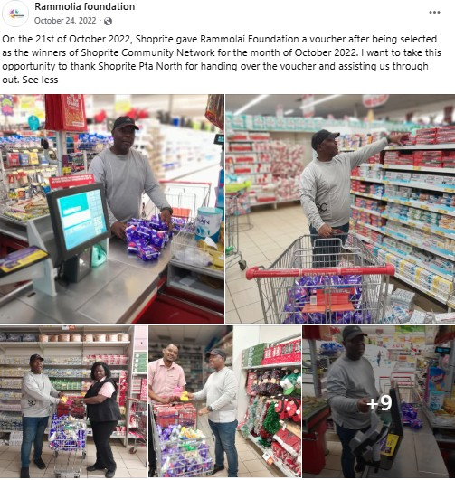

Who We Are
Rammolai Foundation (NPO 262-788NPO) is a small, family-run charity based in Pretoria North, founded in 2022. Guided by the tagline “A small charity has a big impact,” the Foundation supports underprivileged learners across Pretoria and Atteridgeville.
Our Mission
To give underprivileged children the school essentials and dignity products they need to attend school with confidence.
Our Vision
A Pretoria where no child is held back from school due to a lack of shoes, uniforms, or sanitary products.
Our Team
Rammolai Foundation is led by three family members who run the charity together:
- Motlomo Ramatlo — Founder and Director
- Tshegofatso Ramatlo — Co-Founder and Operations Lead
- Debra Ramatlo — Co-Founder and Community Outreach
A Family Effort

Since its early drives, the Foundation has donated school shoes to learners at Kgabo Primary School and Dikagodintle Primary School, and was recognised by Shoprite Pretoria North as a community network award recipient in October 2022.

Our target audience is underprivileged children in primary and secondary schools in Pretoria and Atteridgeville, along with their parents, teachers, individual donors, corporate sponsors, and community volunteers.